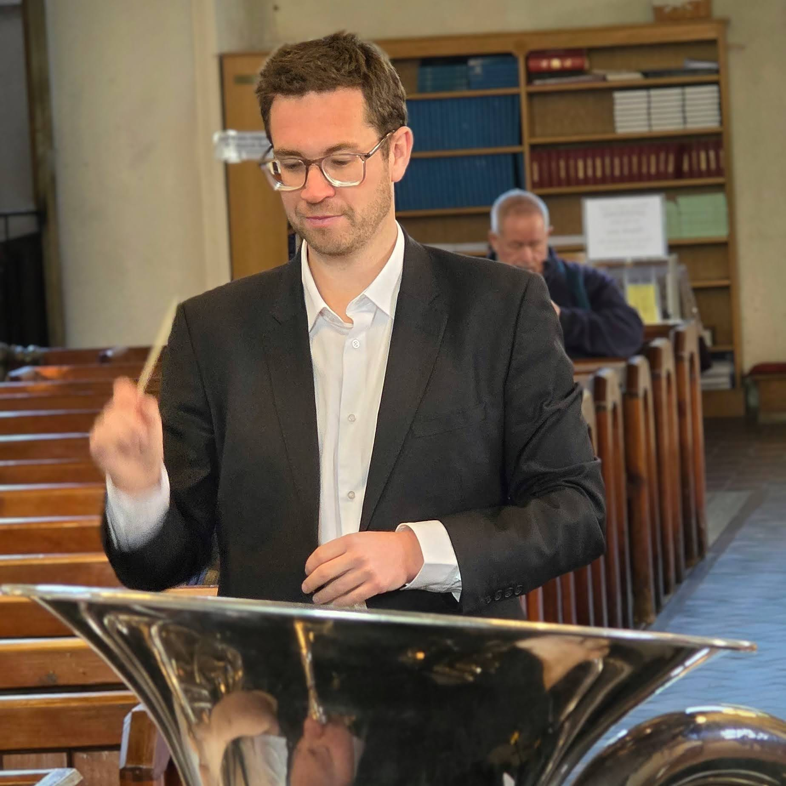

Crosskeys Silver Band is a historic, community-focused brass band dedicated to musical excellence, performance, and preserving our Welsh brass heritage.
From local roots to the national stage.
Founded in 1901 in the heart of the Western Valley of Monmouthshire, Crosskeys Silver Band has been a vital musical pillar of our local community for more than 125 years. Rooted in the rich industrial history of South Wales, the band initially brought together local coal miners and workers, establishing a tradition of camaraderie and artistic expression that continues to this day.
Today, we are a modern, forward-looking contesting band. We perform a wide range of repertoire, from traditional brass band marches and classical arrangements to contemporary concert items and film scores. We take pride in representing our region at Welsh contesting finals and community events alike.
Whether performing at local bandstands, concert halls, or competing on stage, Crosskeys Silver Band remains committed to delivering premium musical experiences and mentoring the next generation of brass instrumentalists.

Dave Collins is a first-class honors graduate in Music from Grey College, University of Durham, and holds a Masters in Musical Composition with distinction from Salford University. He is an accomplished conductor, orchestrator, and composer whose brass band works are performed globally by elite ensembles such as the Cory Band, the GUS Band, and the Carlton Main Colliery Band.
During his studies, Dave specialized in acoustical and electronic composition and trained under renowned brass figures including Ray Farr (Conducting and Arranging), Bennet Zon (Orchestration), and Huw Thomas (Conducting and Trumpet Performance). Outside of directing the Crosskeys Silver Band, he works in professional orchestral management.
Dave brings a rich combination of artistic caliber and structured training, maintaining the band's historic standards of excellence while introducing exciting and challenging repertoire to our rehearsal room.
We are always happy to hear from friendly, committed musicians. Explore our current player vacancies below.
Loading current vacancies...
Come along to hear us play or join in.
Pandy Park (Crosskeys RFC)
Woodward Ave, Crosskeys,
Newport, NP11 7PU
Our rehearsals take place in the dedicated bandroom at Pandy Park. Ample free parking is available on-site.
We would love to hear from you, whether you want to book the band, enquire about joining, or ask a question.
Pandy Park, Woodward Ave, Crosskeys, NP11 7PU